Sun
Shop, cook-up + braiseLunch24 g
Dinner34 g
Savoury16 g
Sweet17 g
Tap a meal for the method · weekly staple
Every method in one place
Reach for these
The difference between a plan you follow and food you want is almost always one dried spice and one raw green thing. Two rules underneath the table: acid at the end, not the start — lemon in the pan cooks flat. And never stir soft herbs in; they go khaki. On top, at the table.
| Eggs — boiled, salad | chives, dill, smoked paprika, chilli, capers, celery salt |
| Eggs — shakshuka, frittata | cumin, caraway, paprika, parsley or coriander raw on top |
| Chicken — slow-cooked | harissa, oregano, lemon, garlic, sumac, bay |
| Beef — braised | bay, thyme, peppercorns, caraway, parsley to finish |
| Tinned fish | dill, capers, lemon zest, red onion, chilli |
| Rice — fried | ginger, garlic, white pepper, sesame, raw spring onion |
| Cabbage, raw slaw | lemon, sumac, chilli, mint |
| Focaccia | rosemary, fennel seed, za’atar, garlic steeped in the oil |
| Chocolate | cinnamon, instant coffee, sea salt flakes |
Four sessions · Technogym floor
Order is deliberate. Heaviest compound while you are fresh, isolation after. Do not reshuffle it to get on a free machine — wait, or swap 03 and 04 only.
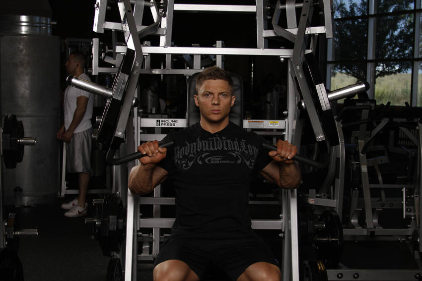
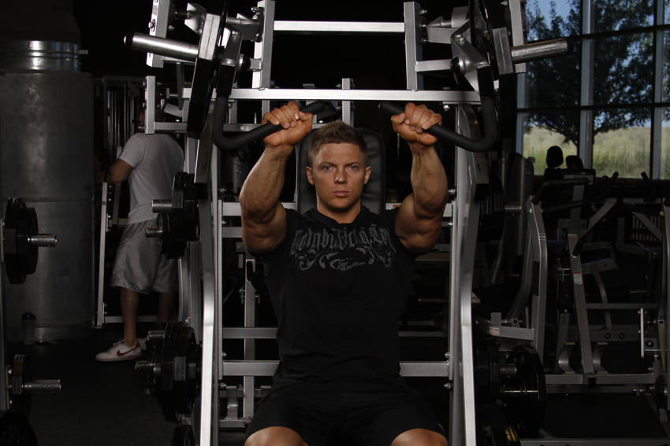
Start Handles level with upper chest, elbows back and below the wrists
End Arms nearly straight, pressed up and slightly in
01
Technogym Selection Pro · incline chest press
Technogym Chest Press — Selection 700 or 900
Seated, upright back pad, two independent lever arms with handles beside your chest, weight stack behind you. Most Technogym floors have no dedicated incline machine: use the standard chest press with the seat dropped to its lowest setting, which raises the handles relative to your chest and gives you the angle. Failing that, an adjustable bench at 30° with dumbbells in the Pure area.
Scan the QR on the machine console with the Technogym app for their own video of the movement.
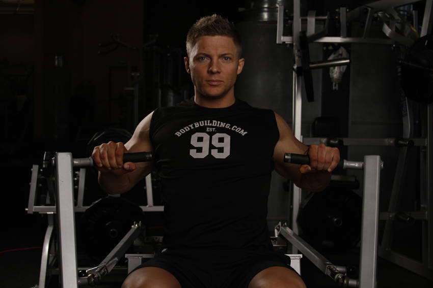

Start Handles at mid-chest, shoulder blades pinned back and down
End Arms extended forward, short of lockout
02
Technogym Selection Pro · chest press
Technogym Chest Press — the same machine as 01
Raise the seat so the handles line up with the middle of your chest. Same machine, one pin change, completely different emphasis. Do not go and queue for a second one.
Scan the QR on the machine console with the Technogym app for their own video of the movement.

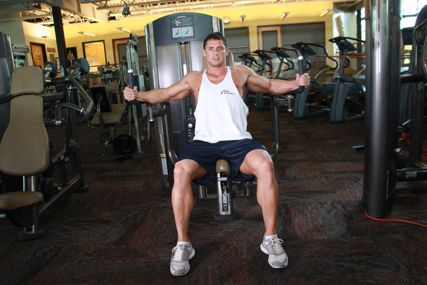
Start Arms wide, elbows soft and fixed at that angle
End Pads touching in front, squeezed for a full second
03
Technogym Selection Pro · pectoral machine (pec deck)
Technogym Pectoral Machine — often a combined Pectoral / Rear Delt
The giveaway is the arms: vertical pads you press with your forearms, not handles you push with your hands. If it has handles pointing forward you are at the chest press. If it is the combined pec/rear-delt version, the arms have to be swung round to the front position before you sit down.
Scan the QR on the machine console with the Technogym app for their own video of the movement.


Start Pulleys at the bottom, arms down and out, one foot forward
End Hands together around collarbone height
04
Technogym Pure · dual adjustable pulley, both arms set low
Technogym Dual Adjustable Pulley, cable station, or Kinesis
Two tall uprights with a carriage that slides up and down and a D-handle on each cable. Slide both carriages to the bottom. If your gym has the wall-mounted Kinesis, that works too and the cables move more freely.
Scan the QR on the machine console with the Technogym app for their own video of the movement.
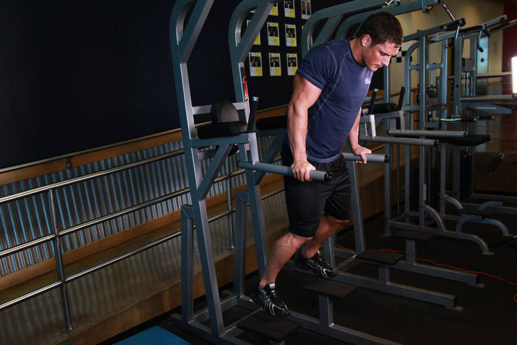

Start Arms straight on the bars, chest leaning forward over the hands
End Lowered until upper arms are parallel to the floor
05
Technogym Selection Pro · assisted chin/dip
Technogym Selection Assisted Chin / Dip
Tall frame, pull-up bar on top, dip bars at waist height, and a padded platform for your knees or feet. The stack takes weight off you rather than adding it, so a higher number is more help, not less — that is backwards from every other machine here and it catches everyone out once.
Scan the QR on the machine console with the Technogym app for their own video of the movement.
General training guidance, not coaching. Sharp pain in the shoulder joint means stop, not push through.
Every set on the cable station. Five exercises, one machine, three attachments — you move the carriage up or down and swap rope for bar. Nothing to queue for and no walking between sets, which is most of why this fits in 40 minutes. The cable also holds tension where free weights lose it, at the top of a curl and the bottom of a pushdown, which is exactly where arms do their work.
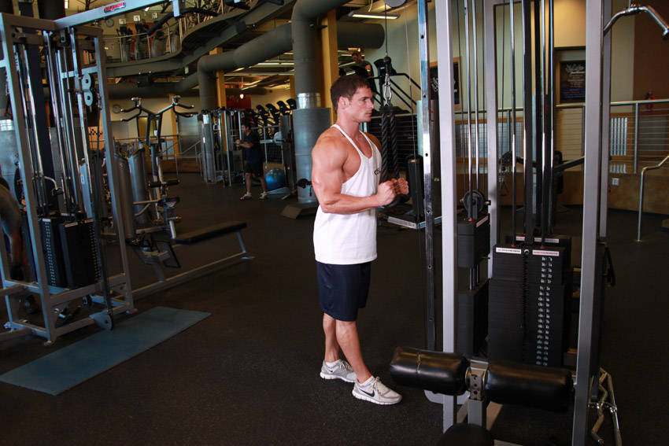

Start Rope at chest height, elbows tight to the ribs
End Arms straight, rope split apart at the thighs
01
Rope on the high pulley
Technogym Dual Adjustable Pulley · cable station. Rope attachment, carriage at the top. Elbows pinned to your ribs and kept there — the second they drift forward it becomes a shoulder movement.
Scan the QR on the machine console with the Technogym app for their own video of the movement.


Start Arms down, cable already under tension
End Curled to shoulder height, elbows still at the sides
02
Straight or EZ bar on the low pulley
Technogym Dual Adjustable Pulley · cable station. Carriage all the way down, bar attachment. Stand a pace back from the column so there is tension on the cable before you even start.
Scan the QR on the machine console with the Technogym app for their own video of the movement.


Start Rope behind the head, elbows bent and high
End Arms straight overhead, elbows still forward
03
Rope on the low pulley
Technogym Dual Adjustable Pulley · cable station. Face away from the machine, rope over your shoulders, elbows pointing forward at the ceiling.
Scan the QR on the machine console with the Technogym app for their own video of the movement.

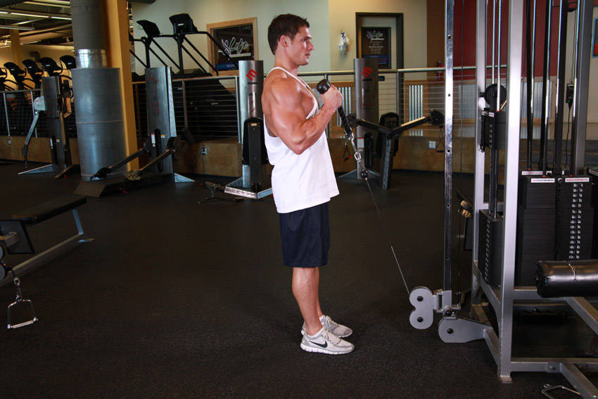
Start Arms down, palms facing each other
End Curled to the shoulders, palms still facing in
04
Rope on the low pulley
Technogym Dual Adjustable Pulley · cable station. Rope attachment, neutral grip, thumbs up the whole way and never rotating.
Scan the QR on the machine console with the Technogym app for their own video of the movement.
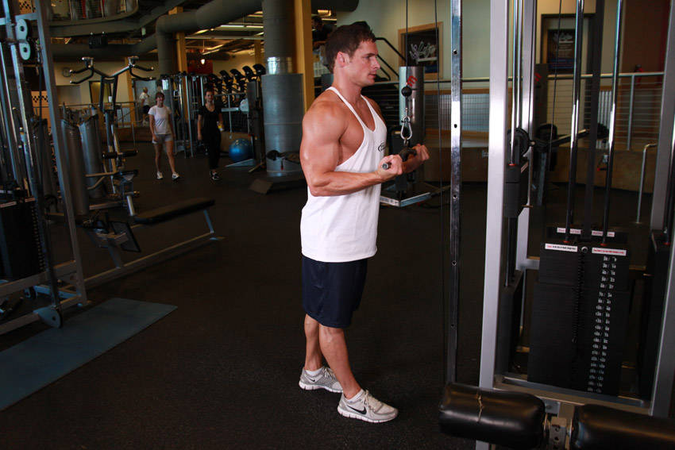
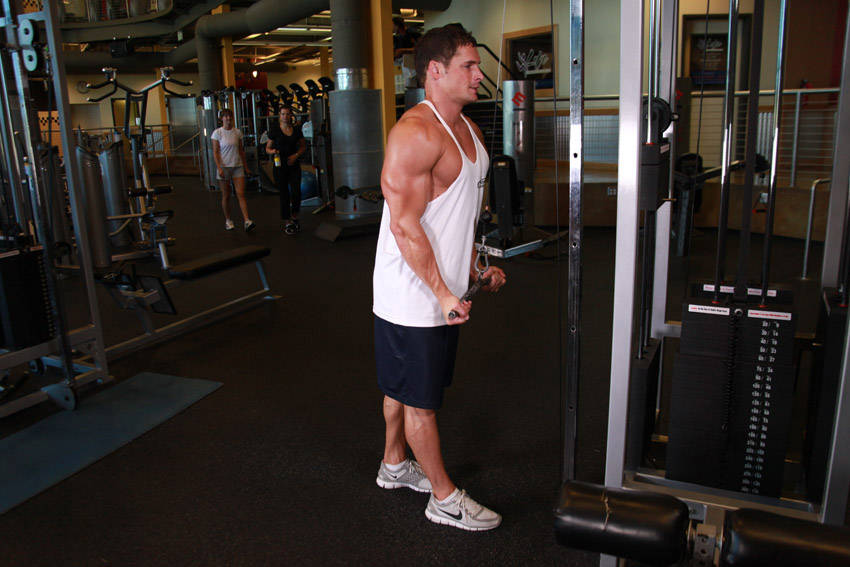
Start Bar at chest height, underhand grip
End Arms straight down, wrists neutral
05
Straight bar on the high pulley
Technogym Dual Adjustable Pulley · cable station. Same setup as 01 with an underhand grip on a straight bar. Two sets to finish, nothing heavy.
Scan the QR on the machine console with the Technogym app for their own video of the movement.
General training guidance, not coaching. Sharp pain in a joint means stop, not push through.
Two of these are loaded and that is deliberate. Abs are muscle and they grow the same way everything else does — by getting harder over time. Endless bodyweight crunches stop working the moment you can do forty. Start with the hardest movement and finish braced against a cable that is trying to twist you.


Start Hanging straight, shoulders packed down
End Knees up past the hips, pelvis curled under
01
Technogym Selection Assisted Chin / Dip, or a captain’s chair
Use the dip bars with your back against the pad, or hang from the bar above if your grip holds.
Scan the QR on the machine console with the Technogym app for their own video of the movement.


Start Kneeling tall, rope at the ears
End Elbows driven to the thighs, spine rounded
02
Technogym cable station, rope on the high pulley
Kneel facing the machine, rope beside your ears, hips fixed.
Scan the QR on the machine console with the Technogym app for their own video of the movement.
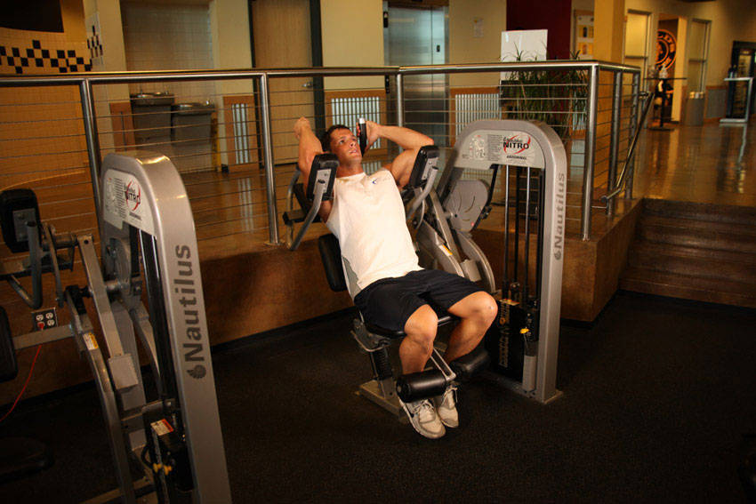
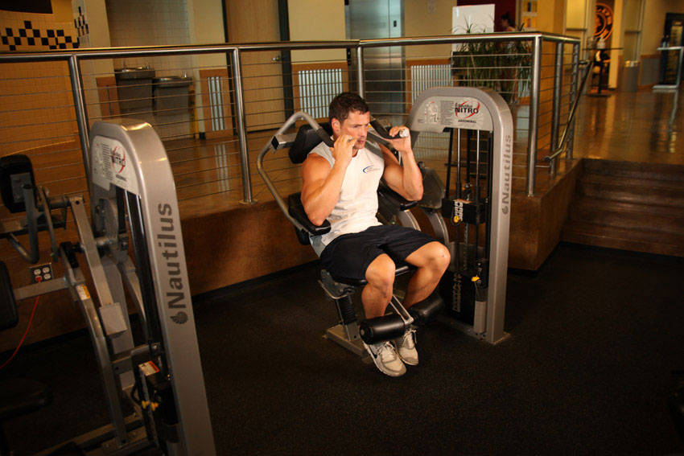
Start Upright, chest against the pad
End Crunched forward, ribs towards hips
03
Technogym Selection Abdominal Crunch
Seated, chest pad across the front, feet hooked. Loaded from a stack so you can measure progress.
Scan the QR on the machine console with the Technogym app for their own video of the movement.
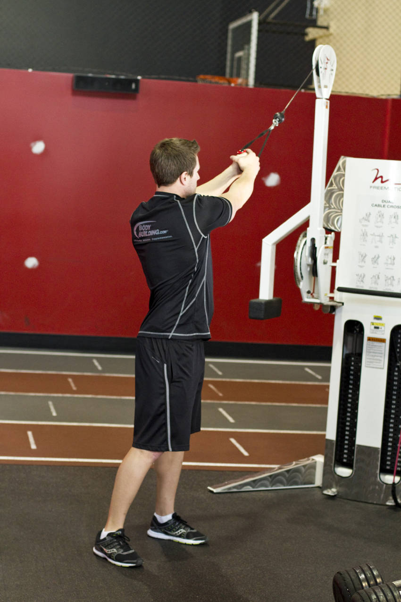

Start Handle high and across, arms extended
End Pulled down to the opposite hip, torso rotated
04
Technogym Dual Adjustable Pulley, handle set high
Pull down and across the body, rotating through the ribs and letting the back foot pivot.
Scan the QR on the machine console with the Technogym app for their own video of the movement.
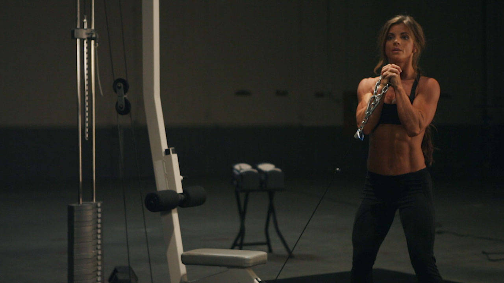

Start Handle at the chest, stood side-on to the machine
End Arms pressed straight out, torso refusing to rotate
05
Technogym Dual Adjustable Pulley · handle at chest height
Stand side-on to the column, feet shoulder width, handle clasped in both hands at the sternum. Step away until the cable is properly loaded.
Scan the QR on the machine console with the Technogym app for their own video of the movement.
General training guidance, not coaching. Sharp pain in a joint means stop, not push through.
No legs. Pull, push, pull, press, then six sets of arms to finish on the cable station. Biggest movements first, and nothing trained twice in a row. Use this on a day you only get one session in.


Start Arms overhead, shoulder blades lifted
End Bar at collarbone, elbows down by the ribs
01
Technogym Selection Vertical Traction — their name for the lat pulldown
Seated, thigh pad down, wide overhand grip.
Scan the QR on the machine console with the Technogym app for their own video of the movement.
Start Handles at mid-chest, elbows back
End Arms extended forward, short of lockout
02
Technogym Chest Press — Selection 700 or 900
Seat set so the handles line up with mid-chest.
Scan the QR on the machine console with the Technogym app for their own video of the movement.


Start Arms extended, shoulder blades forward
End Handle at the ribs, blades squeezed back
03
Technogym Selection Low Row, or the seated cable row
Chest against the pad if the machine has one, or feet braced on the plate.
Scan the QR on the machine console with the Technogym app for their own video of the movement.
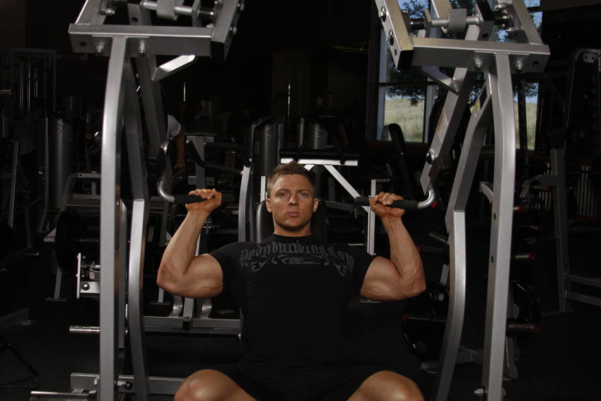

Start Handles at ear height, elbows under wrists
End Arms extended overhead, short of lockout
04
Technogym Selection Shoulder Press
Seated, back flat, handles starting at ear height.
Scan the QR on the machine console with the Technogym app for their own video of the movement.
Start Arms down, cable under tension
End Curled to shoulder height, elbows fixed
05
Bar on the low pulley · Technogym Dual Adjustable Pulley · cable station
Carriage down, stand a pace back so the cable is loaded before you start.
Scan the QR on the machine console with the Technogym app for their own video of the movement.
Start Rope at chest height, elbows tight
End Arms straight, rope split at the thighs
06
Rope on the high pulley · Technogym Dual Adjustable Pulley · cable station
Same station, carriage to the top, rope attachment.
Scan the QR on the machine console with the Technogym app for their own video of the movement.
General training guidance, not coaching. Sharp pain in a joint means stop, not push through.
One shop, seven days — nothing sits too long
Raw chicken should not be sitting in the fridge from Sunday to Wednesday, and cooked meat is a three-day proposition. This is what moves where, and when.
Chicken breast straight to the freezer — it is not needed until Wednesday. Thigh fillets and beef chuck to the fridge; both get cooked within 24 hours.
Half the focaccia sliced and frozen. Half the pulled thigh into the freezer for Wednesday’s melt; the rest stays in the fridge for Tuesday.
Friday’s half of the braise and its strained liquid straight into the freezer. Left in the fridge it would be five days old by Friday.
Wednesday’s pulled thigh out of the freezer into the fridge.
Bake the frittata with whatever the fridge has accumulated plus the ham. Cool, cut into six, fridge. That is the savoury snack from Thursday to Saturday.
Portion Saturday’s share of the cooked breast into the freezer. Left in the fridge it would be four days old by Saturday, which is past where I would eat it.
The braise out of the freezer into the fridge for Friday’s ragu, and the last of the focaccia with it.
The rule underneath all of this: cooked dishes get eaten within about three days or they get frozen, and anything frozen thaws in the fridge overnight rather than on the bench. For actual times and temperatures, Food Standards Australia New Zealand rather than a meal plan.
Sunday · one trip
Quantities and prices scale with the pax counter, but supermarkets sell whole packs — at 3 or 4 people you'll round up and the real total lands higher than the arithmetic. Prices are rough shelf prices, not catalogue specials. Focaccia drinks olive oil — if your bottle is low, add one to the trip. The bottom two blocks are not in the weekly total: one is stock-up that lasts months, the other is what each extra $10 buys you in protein.
2 pax · 20 lines · shelf packs, no lentils
Cupboard assumed · olive oil salt pepper soy stock baking powder · red wine and protein powder you already have
For next week’s plan
Anything you want changed, added or dropped. Write it as it occurs to you — mid-cook, in the aisle, after dinner — and it will be waiting when the next plan gets built.
Shells only — no logic yet
For meals outside the weekly plan — a birthday dinner, guests on the weekend. Kept separate so they never disturb the shop or the Sunday sequence.
To wire: store against a date, flag whether its ingredients merge into that week's shop or stay separate, surface it on the day it falls.
Photograph what's actually on the shelf, get back a recipe that uses it. Aimed at the Thursday problem — half a cabbage, three eggs, some rice, no idea.
Take a photo or drop an image
JPG / PNG · fridge shelf, bench, pantry
To wire: identify ingredients from the image, cross-check against what the plan says should still be in the fridge, rank by what expires soonest.